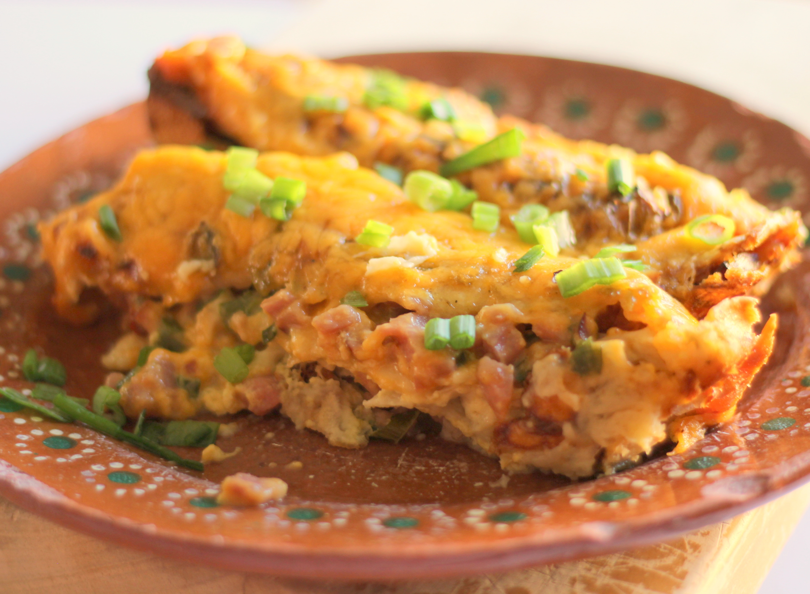

Brunch Enchiladas

Description
Enchiladas filled with ham, vegetables and cheese and baked in a creamy egg batter.
Original Recipe!
Ingredients
- 1 pound cooked ham, chopped
- ¾ cup sliced green onions
- ¾ cup chopped green bell peppers
- 3 cups shredded Cheddar cheese, divided
- 10 (7 inch) flour tortillas
- 5 eggs, beaten
- 2 cups half-and-half cream
- ½ cup milk
- 1 tablespoon all-purpose flour
- ¼ teaspoon garlic powder
- 1 dash hot pepper sauce
Steps
- Place ham in food processor, and pulse until finely ground. Mix together ham, green onions, and green peppers. Spoon 1/3 cup of the ham mixture and 3 tablespoons shredded cheese onto each tortilla, then roll up. Carefully place filled tortillas, seam side down, in a greased 9x13 baking dish.
- In a medium bowl, mix together eggs, cream, and milk, flour, garlic powder, and hot pepper sauce. Pour egg mixture over tortillas. Cover, and refrigerate overnight.
- The next morning, preheat oven to 350 degrees F (175 degrees C).
- Bake, uncovered, in preheated oven for 50 to 60 minutes, or until set. Sprinkle casserole with remaining 1 cup shredded cheese. Bake about 3 minutes more, or until cheese melts. Let stand a least 10 minutes before serving.